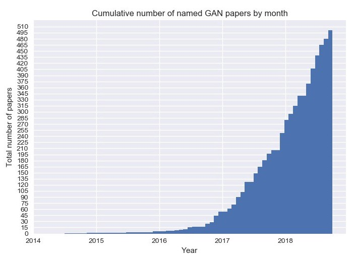

Introduction
Introduction à l'apprentissage par renforcement

Une des premières applications de RL - Atari
Plus récent : AlphaGo de DeepMind
Branches de Machine Learning
En machine learning, on distingue principalement 3 paradigmes d'apprentissage et qui sont imposés par le type de tâches qu'on cherche à effectuer ainsi que les données à disposition. Ces types d'apprentissage sont :
- Supervised Learning (apprentissage supervisé) : Dans ce contexte, nous disposons de variables d'entrée (x), une variable de sortie (Y) et nous utilisons un algorithme pour apprendre le mapping entre l'entrée et la sortie. Le terme "supervisé" vient du fait que l'apprentissage d'un algorithme à partir d'un ensemble de données peut être considéré comme un enseignant qui supervise le processus d'apprentissage : Nous connaissons les bonnes réponses, l'algorithme fait des prédictions itératives sur les données de formation et est corrigé par l'enseignant et cet apprentissage s'arrête lorsque l'algorithme atteint un niveau de performance acceptable.
- Unsupervised Learning (apprentissage non supervisé) : Cas où nous n'avons que des données d'entrée (X) et aucune variable de sortie correspondante. L'objectif du framework non supervisé est de modéliser la structure ou la distribution sous-jacente (latente) des données. Dans l'apprentissage non supervisé, il n'y a pas de bonnes réponses et donc pas d'enseignant : Les algorithmes sont livrés eux-mêmes pour découvrir et présenter la structure intéressante des données.
- Reinforcement Learning (apprentissage par renforcement) : L'apprentissage par renforcement est un aspect du machine learning entièrement différent. Dans le Reinforcement Learning, un agent apprend à se comporter dans un environnement, en effectuant certaines actions puis en observant les récompenses/résultats obtenus par ces actions. Dès lors, nous avons ce processus action -> conséquence -> action prenant le résultat précédent en compte, etc ... Cela permet de s'attaquer à des problématiques qui ne peuvent pas être résolues par les deux approches précédentes, par exemple : Comment apprendre à un algorithme d'IA à jouer à un jeu en s'inspirant d'anciennes parties jouées ?

Reinforcement Learning : Un peu d'histoire
Au cours des dernières années, les chercheurs en intelligence artificielle ont réalisé des progrès impressionnants en utilisant une technique appelée apprentissage profond ou deep learning. En fournissant à un système d’apprentissage profond suffisamment d’images il sera capable d’apprendre, par exemple, à reconnaître un piéton qui est sur le point de traverser une route. Cette approche a rendu possibles des avancées comme les voitures autonomes et la technologie de conversation qui alimente Alexa, Siri et d’autres assistants virtuels. Mais si ce type d’IA, à savoir des réseaux de neurones profonds, peuvent apprendre à reconnaître des choses, elles n’ont pas été douées pour les créer. Le but des GANs est de donner aux machines quelque chose que nous pourrions assimiler à une forme d'imagination.
